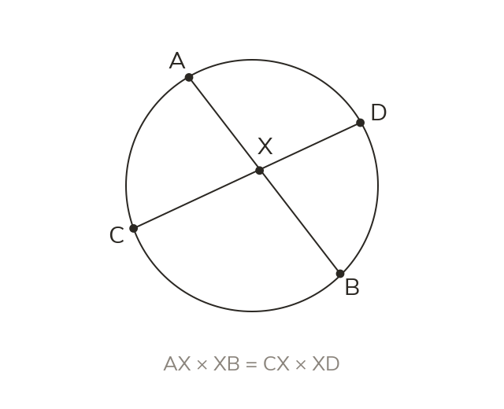
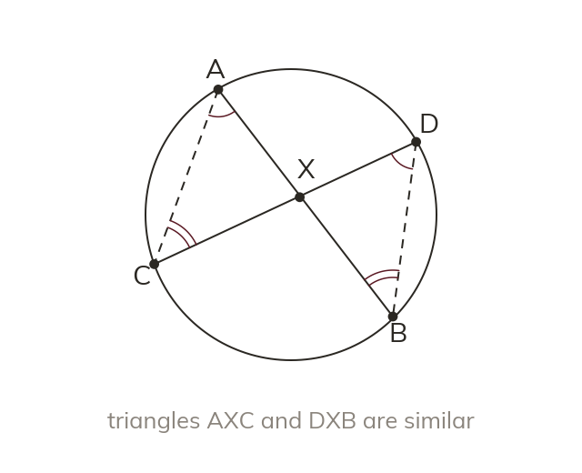
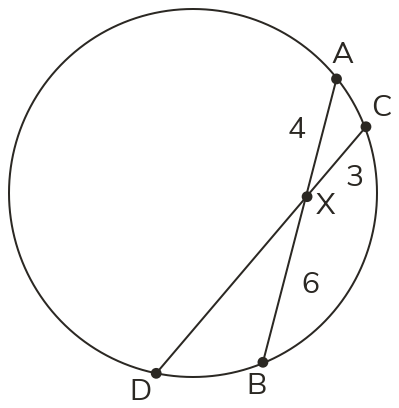
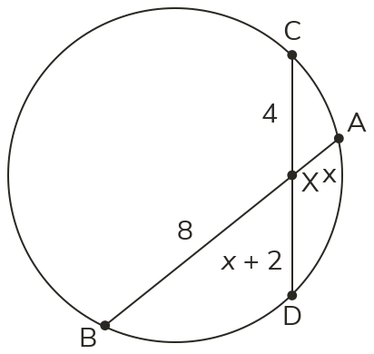
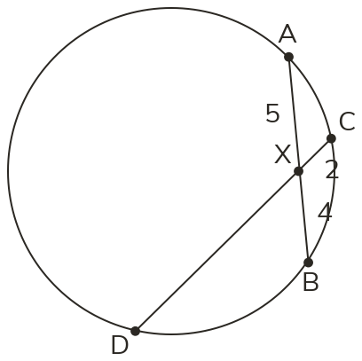
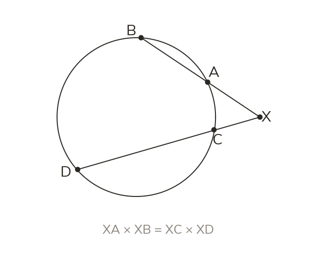
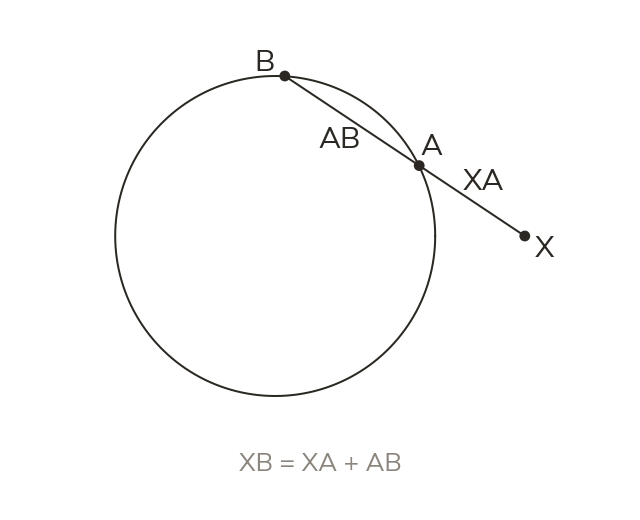
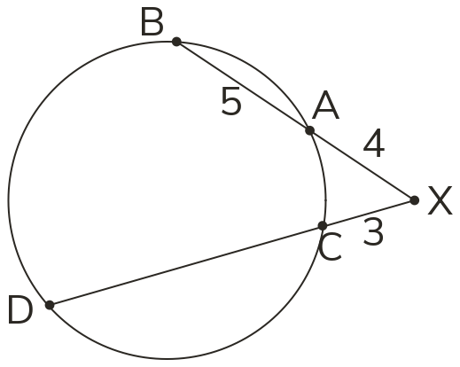
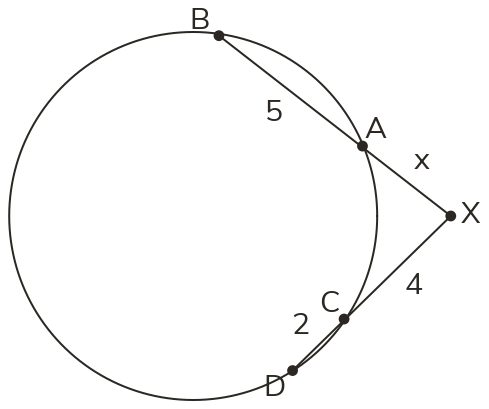
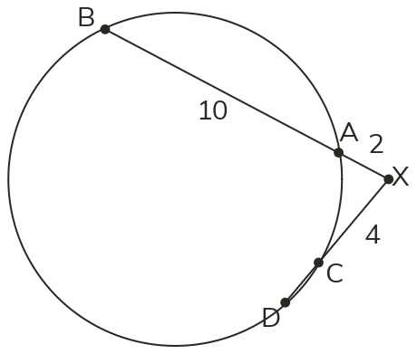

Crossing chords multiply
When two chords cross inside a circle, the products of their parts are equal. Each product uses one chord's two parts.
An engineer can find the radius of a broken wheel from one chord and the height of its arc. It works because crossing chords always multiply to the same product.
Work down the page at your own pace. Write every answer in your book first, then click to check it.
Read each card, then follow the worked examples one step at a time.

When two chords cross inside a circle, the products of their parts are equal. Each product uses one chord's two parts.

The chords make two similar triangles, by angles in the same segment. Their sides in proportion give the equal products.


Pick an answer. If it's wrong, the feedback tells you which mistake it was.

Read each card, then follow the worked examples one step at a time.

Two chords, extended, can meet at a point outside the circle. Their parts, measured from that point, still give equal products.

Every length in the rule starts at X. So the far length runs through the whole chord.


Pick an answer. If it's wrong, the feedback tells you which mistake it was.

Finished? Next lesson: 10H.14.6 Tangents from a Point Outside a Circle.
Log in, then search for a code to practise that skill.
Videos, worksheets and more on each part of this lesson.